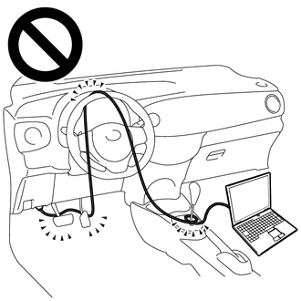
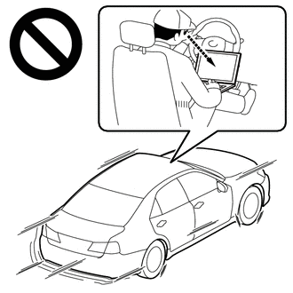

| Last Modified: 10-07-2025 | 6.11:8.1.0 | Doc ID: RM100000002JJ1C |
| Model Year Start: 2024 | Model: Tacoma | Prod Date Range: [12/2023 - ] |
| Title: AL80F (AUTOMATIC TRANSMISSION / TRANSAXLE): AUTOMATIC TRANSMISSION SYSTEM: ROAD TEST; 2024 - 2026 MY Tacoma [12/2023 - ] | ||
ROAD TEST
PROBLEM SYMPTOM CONFIRMATION
(a) Based on the result of the customer problem analysis, try to reproduce the symptoms. If the problem is that the transmission does not shift up, shift down, or the shift point is too high or too low, conduct the following road test referring to the automatic shift schedule and simulate the problem symptoms.
ROAD TEST
CAUTION:
- Strictly obey all traffic rules and regulations. 
- Do not drive the vehicle with the GTS cable contacting the pedals, shift lever or steering wheel.
- Driving the wheel with the GTS cable contacting these areas could impede vehicle control, resulting in a serious accident.
- Do not operate the GTS while driving the vehicle. 
- Operating the GTS while driving the vehicle will prevent you from paying sufficient attention to vehicle surroundings, and could result in a serious accident.
NOTICE:
- Be sure to inspect and adjust the engine before performing these tests.
- Perform the road test with the engine coolant temperature between 60 and 100°C (140 and 212°F) and the ATF temperature between 50 and 100°C (122 and 212°F).
- Perform these tests with the air conditioning and cruise control off.
- Select Normal for the driving mode.
|
Inspection |
Procedure |
|---|---|
|
Transmission Control Switch Test |
With the vehicle stationary and the shift lever in D, move the shift lever to S and return it to D. Check that the meter display changes from D to the appropriate S and then back again. |
|
S Position Test |
While driving with the shift lever in S, operate the shift lever to "+" and"-". Check that the meter display changes accordingly. |
|
D Position Shift Test |
While driving the vehicle normally, check that the transmission shifts up and down through each gear properly. |
|
Lock-up Function |
While driving on a level surface at a constant speed in the lock-up range with the shift lever in D, lightly depress the accelerator pedal and check that the engine speed does not change abruptly. |
|
P Position Test |
Stop the vehicle on an incline (approximately 5° or more). Then move the shift lever to P and release the parking brake. Check that the parking lock pawl holds the vehicle in place. |
|
Abnormal Noise and Vibration |
Check for abnormal noise and vibration while driving the vehicle forward and backward, and during shift operations. |
|
Fluid Leakage |
After performing all other road test inspections, check for fluid leakage. |
HINT:
When checking for DTCs after a repair, drive the vehicle according to the Monitor Drive Pattern.
Click here
![2024 - 2026 MY Tacoma [12/2023 - ]; AL80F (AUTOMATIC TRANSMISSION / TRANSAXLE): AUTOMATIC TRANSMISSION SYSTEM: MONITOR DRIVE PATTERN](../../../../stylegraphics/info.gif)
(a) Gear change confirmation
(1) Enter the following menus: Powertrain / Transmission / Data List.
Powertrain > Transmission > Data List
|
Tester Display |
|---|
|
Vehicle Speed |
|
Coolant Temperature |
|
NT Sensor Speed |
|
A/T Oil Temperature No.1 |
|
Shift Status |
(2) Check that the transmission shifts to each gear while gently accelerating to 100 km/h (62 mph) or more.
HINT:
- Check that the value of "NT Sensor Speed" drops by 50 rpm or more when the value of "Shift Status" increases.
- Depending on the engine speed when the gear is changed, it may be difficult to see the change of NT Sensor Speed.
(b) Lock-up confirmation
(1) Enter the following menus: Powertrain / Transmission / Data List.
Powertrain > Transmission > Data List
|
Tester Display |
|---|
|
Vehicle Speed |
|
Engine Speed |
|
Coolant Temperature |
|
NT Sensor Speed |
|
A/T Oil Temperature No.1 |
|
Lock Up Status |
|
Shift Status |
(2) When the following conditions are met, check that the difference between "Engine Speed" and "NT Sensor Speed" is 50 rpm or less.
Lock-up Schedule
|
Vehicle Speed |
8 km/h (5 mph) or more |
|
Lock Up Status |
ON |
|
Shift Status |
2nd |
HINT:
- If Lock Up Status does not change to ON, decrease the throttle valve opening angle or increase the vehicle speed.
- Lock-up prohibition conditions:
- ATF temperature is below 20°C (68°F)
- Shifting operation